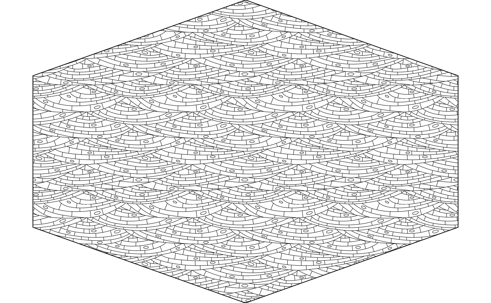
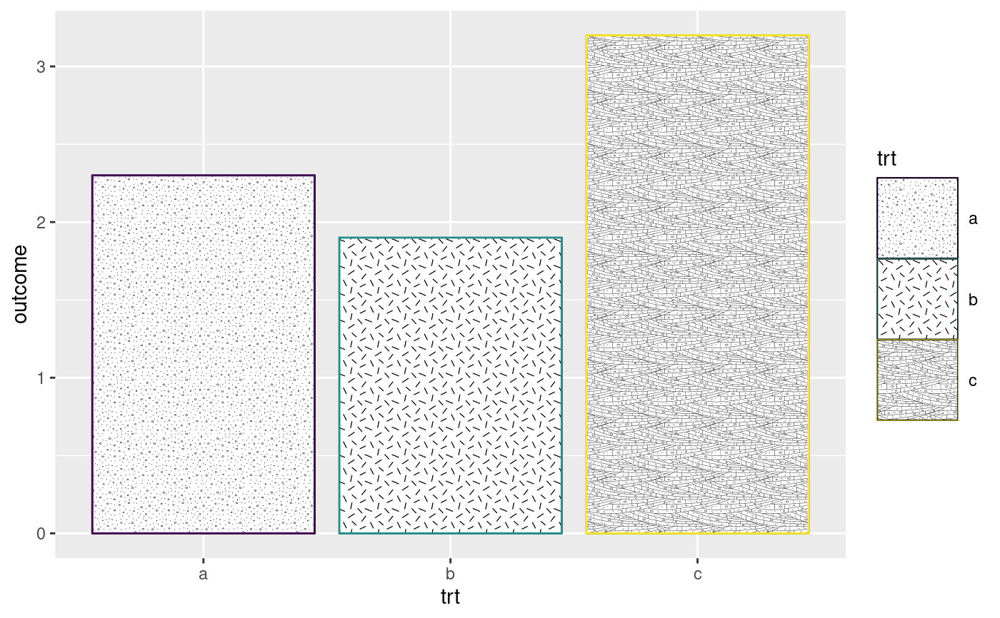

This function can be used to plot a single geologic pattern as defined in the
FGDC Digital Cartographic Standard for Geologic Map Symbolization by the U.S. Geological Survey and the Geologic Data Subcommittee (GDS) of the Federal Geographic Data Committee (FGDC). The pattern is plotted on the
existing canvas (i.e., use grid::grid.newpage() to make a new canvas).
Arguments
- params
A list of pattern parameters to customize the plotted pattern (see "Details").
- boundary_df
A
data.frameconsisting of three columns: "x" (x-coordinates), "y" (y-coordinates), and "id" (polygon group ID). Thisdata.framedefines the boundary (as a closed polygon) of the plotted pattern.- aspect_ratio
Unused.
- legend
Unused.
Details
The following params are accepted:
pattern_alphaAlpha transparency for pattern. default: 1
pattern_colourColor used for strokes and points in the pattern. default: 'black'
pattern_fillColor used to fill various closed shapes (e.g., circles) in the pattern. default:
NApattern_scaleScale. default: 2
pattern_typeCode for the FGDC pattern to use. See
geo_pattern()for more details. default: "101"fillColor used for the background. default: "white"
Warning
Pattern fills are not supported on all graphics devices.
Not all devices are under active development, and such devices are unlikely
to add support for new features (such as pattern fills). The new features
have only been implemented on a subset of graphics devices so far:
cairo_pdf(), cairo_ps(), x11(type="cairo"),
png(type="cairo"),
jpeg(type="cairo"),
tiff(type="cairo"), svg(), and pdf(). Although
there is no support yet for quartz() or windows(), almost all of the
graphics devices above will work on all major platforms. Further, the
ragg and
svglite packages contain graphics
devices that support patterns. When using a graphics device where patterns
are not supported, closed shapes will be rendered with a transparent fill.
Note that, at least on Windows machines, the default device in RStudio and
in the knitr package is png(), which does not support patterns. In
RStudio, you can go to ‘Tools > Global Options > General > Graphics’ and
choose the ‘Cairo PNG’ device from the dropdown menu to display patterns.
Similar issues may arise when using RStudio on other operating systems.
See also
FGDC patterns:
geo_pattern(),
scale_fill_geopattern()
Examples
# use the function directly to make a hexagon with the pattern
library(grid)
x <- 0.5 + 0.5 * cos(seq(2 * pi / 4, by = 2 * pi / 6, length.out = 6))
y <- 0.5 + 0.5 * sin(seq(2 * pi / 4, by = 2 * pi / 6, length.out = 6))
grid.newpage()
grid.pattern_geo(params = list(pattern_type = "633", pattern_scale = 4),
boundary_df = data.frame(x, y, id = 1))

# use the function via ggpattern by specifying `pattern = 'geo'`
library(ggplot2)
library(ggpattern)
df <- data.frame(trt = c("a", "b", "c"), outcome = c(2.3, 1.9, 3.2))
ggplot(df, aes(trt, outcome)) +
geom_col_pattern(aes(color = trt, pattern_type = trt), pattern = 'geo',
pattern_color = "black", fill = "white", pattern_fill = "white") +
scale_pattern_type_manual(values = c("101", "313", "634")) +
scale_color_viridis_d() +
theme(legend.key.size = unit(1.5, 'cm'))
